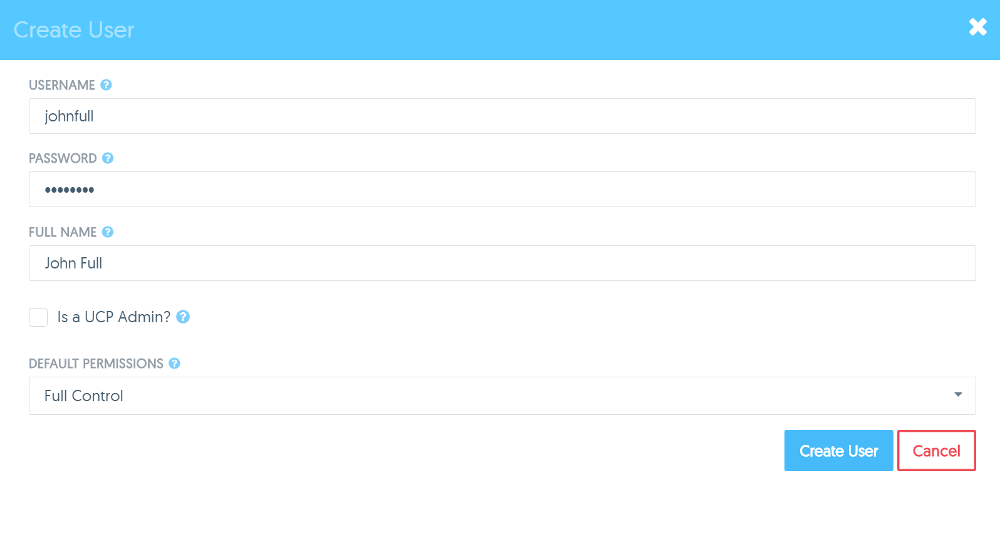
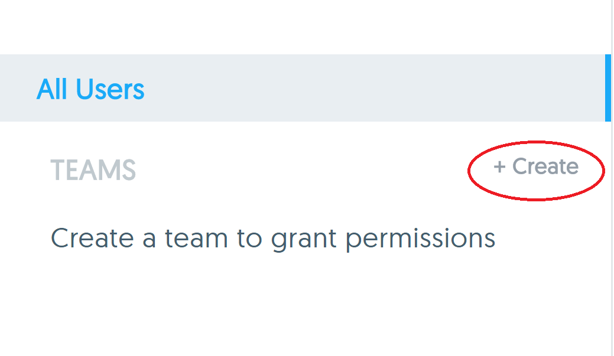

Mini lecture: User management
Mini lecture: User management
User management overview
- Users can be managed directly in UCP or via an external LDAP / AD instance
- Users are organized into teams
- Teams are given permissions via the use of labels
- Permissions are applied to resources based on the label
Creating a user
- Two levels of authorization
- Default permissions control access to Services, Images, Networks and Volumes

Creating a team
- Teams can be "managed" or "discovered"
- Discovered teams are groups set up in LDAP / AD
- Users can belong in multiple teams
